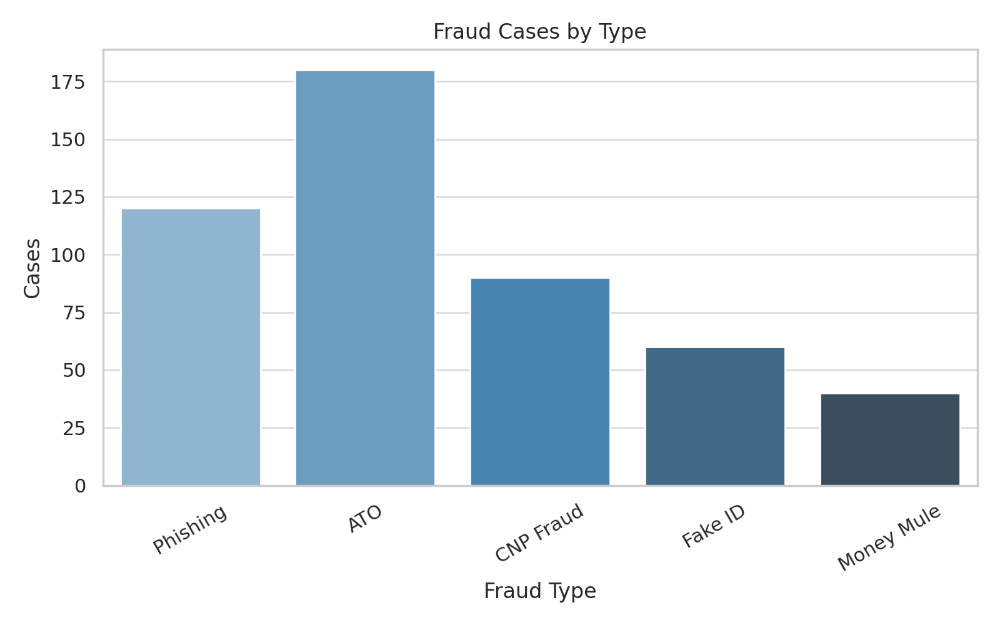
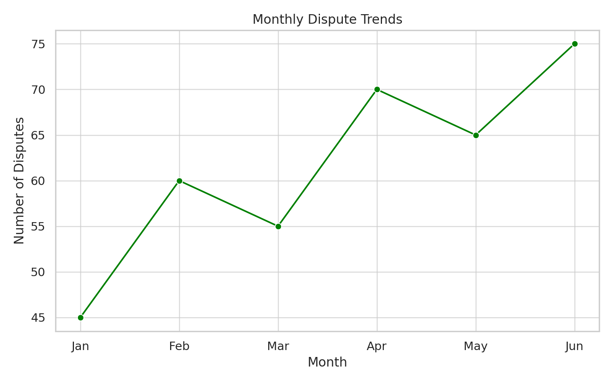

Samuel Elias Arana
Aspiring Data Analyst | Fraud Investigator
I’m an aspiring data analyst with over two years of professional experience in fraud detection, transaction monitoring, and risk analysis. I’m currently earning a Data Analysis Certificate from Calbright College and skilled in tools like SQL, Excel, Tableau, and Kount. I’m highly analytical, adaptable, and passionate about using data to solve real-world problems.
Visuals
Here are a few visual examples from my work:


Skills
- Fraud & Risk: Kount, Stripe, LexisNexis, AML, PCI-DSS, KYC, GDPR
- Data Analysis: SQL, Excel (VLOOKUP, Pivot Tables, Power Query), Tableau
- Soft Skills: Problem-Solving, Attention to Detail, Communication, Teamwork, Stress Management
Experience
Fraud Investigator II / Process Specialist – Remitly
Apr 2022 – Jan 2023
- Investigated 50+ fraud alerts monthly (ATO, identity theft, etc.)
- Reduced fraudulent activity by 40%, saving $500K annually
- Collaborated with compliance to ensure AML/KYC/PCI-DSS standards
- Presented actionable fraud detection strategies
Fraud Investigator I / Chargeback Analyst – Remitly
May 2021 – Mar 2022
- Reviewed 100+ chargeback claims monthly
- Reduced fraud by 20% using SQL and Excel pattern analysis
- Automated transaction flagging using Kount, cutting manual review by 40%
Mathematics Tutor – YMCA
Oct 2023 – Jul 2024
Warehouse Associate – Nordstrom
Sep 2024 – Dec 2024
Projects
Fraud Trends Dashboard
- Built a Tableau dashboard to visualize fraud incidents (ATO, phishing, CNP)
- Cleaned raw Excel data and used SQL to extract insights
Customer Dispute Pattern Analysis
- Analyzed 500+ customer disputes with Excel PivotTables
- Found high-risk merchant categories and proposed solutions to reduce risk
Education & Certifications
- Certificate in Data Analysis – Calbright College (Expected Nov 2025)
- SQL Programming – LinkedIn Learning (Jun 2024)
- Excel Data Cleaning & Analysis – Udemy (Jul 2022)
- Fraud Investigation & Risk Compliance – Udemy (Jul 2021)
Achievements
- Reduced fraudulent activity by 40%, saving $500,000 annually
- Cut chargeback processing time by 40% via workflow automation
- Helped develop fraud policies for operational compliance